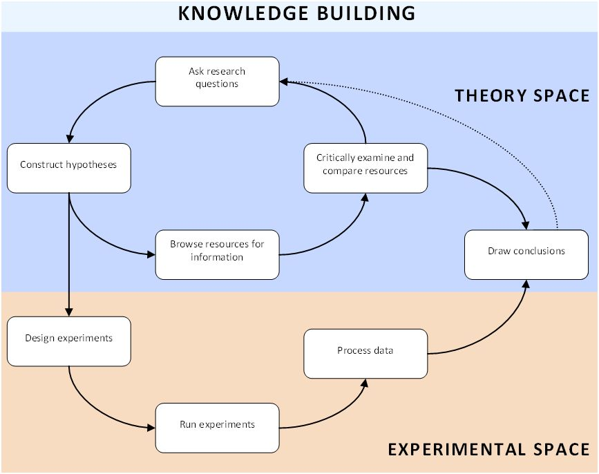

Είστε τώρα μέλος μιας ομάδας ειδικών. Για τα επόμενα μαθήματα, ο στόχος είναι να γίνετε ειδικοί σε ένα συγκεκριμένο πεδίο γνώσης. Αλλά, πώς γίνεστε ειδικός; Πώς κτίζετε τη γνώση; Φυσικά, είστε εξοικειωμένοι με τις μηχανές αναζήτησης όπως είναι το Google, τις οποίες χρησιμοποιείτε για να βρείτε πληροφορίες στο διαδίκτυο. Αλλά το μεγαλύτερο μέρος της γνώσης που βρίσκετε στο διαδίκτυο και σε βιβλία, είναι κομμάτι της έρευνας που πραγματοποίησαν αρχικά κάποιοι άλλοι και έγραψαν γι’ αυτό. Έτσι, εκτός από τη μελέτη των πηγών που ήδη υπάρχουν στο διαδίκτυο, θέλουμε επίσης να πραγματοποιήσετε πειράματα από μόνοι σας και με αυτό τον τρόπο να δημιουργήσετε τη «νέα γνώση». Ακριβώς, όπως τους πραγματικούς επιστήμονες.
Τα βήματα που πρέπει να ακολουθήσετε στο στάδιο που πρέπει να γίνετε ειδικοί, απεικονίζονται στο διάγραμμα που φαίνεται πιο κάτω. Όπως μπορείτε να δείτε στο διάγραμμα, υπάρχουν πολλαπλοί τρόποι (μονοπάτια) που μπορεί να ακολουθήσετε. Βασικά, υπάρχουν δύο κύριες διαδρομές. Η μια διαδρομή πραγματοποιείται στο «θεωρητικό κομμάτι», στο οποίο θα πρέπει να αναγνωρίσετε τη διαδικασία, όπως περιγράφεται πιο πάνω, μελετώντας πηγές που ήδη υπάρχουν. Η άλλη διαδρομή ξεκινά από το «θεωρητικό κομμάτι» και φτάνει στο «πειραματικό κομμάτι» και πίσω πάλι στο «θεωρητικό κομμάτι». Έτσι, αν κάνετε τα πειράματά σας πρέπει να ακολουθήσετε αυτή τη διαδρομή. Μπορεί αρχικά να φαίνεται περίπλοκο, αλλά μόλις αρχίσετε θα διαπιστώσετε ότι κάθε δραστηριότητα, λίγο ή πολύ διαδέχεται με λογική σειρά μια άλλη. Κάθε βήμα θα εξηγηθεί λεπτομερώς αργότερα.
